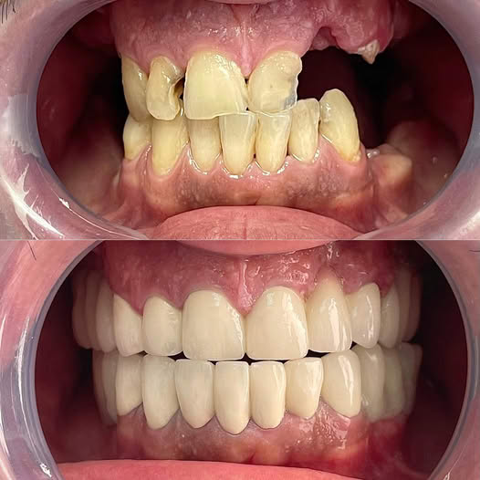

Во стоматологијата, циркуларен мост (или циркуларна протеза) е фиксна протетска конструкција која се користи за замена на сите заби во една вилица. Овој вид мост се поставува врз дентални импланти или останати природни заби кои служат како потпорни точки.
Циркуларниот мост ги заменува сите заби во горната или долната вилица.
Ова е решение за пациенти кои имаат изгубени заби или сериозни оштетувања на забната структура.
Материјали за изработка:
Керамика или порцелан – за природен изглед.
Метал-керамика – за издржливост.
Циркониум – за висока естетика и биокомпатибилност.
Мостот може да се фиксира врз постоечки здрави заби со употреба на коронки како потпорни точки или врз дентални импланти (обично 6–8 импланти по вилица).
